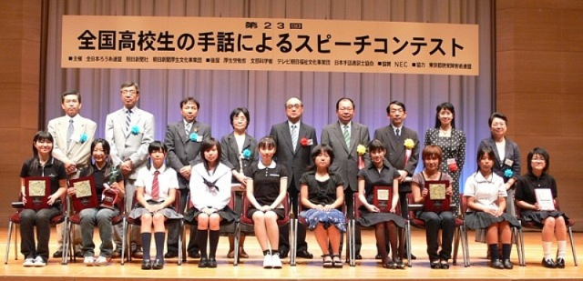
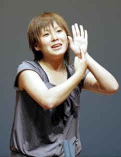
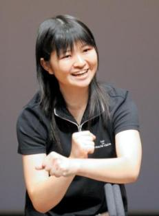
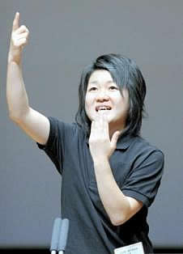

事業団からのお知らせ
第２３回「全国高校生の手話によるスピーチコンテスト」が開催されました
手話の普及とボランティア活動推進のための第２３回「全国高校生の手話によるスピーチコンテスト」が８月２６日（土）、東京・有楽町朝日ホールで開かれま した。全国１０１人の応募者の中から選ばれた１０人が音声と手話を同時に使って「未来の子どもたちへ」「私の学園生活」をテーマに内容、表現、態度などを 競い、５人の入賞者が決まりました。

最終審査出場の高校生と主催者、審査員のみなさん＝写真
第２４回「全国高校生の手話によ
るスピーチコンテスト」出場者募集中
詳
しくはこちらから
優勝 鷲尾美佳さん
優勝した兵庫県武庫川女子大学付属高校３年の鷲尾美佳さんは父親が聴覚障害者のため、手話を自 然に覚えました。「心からの言葉を」と題したスピーチは、「我が家のルール、それは手話で相手の目を見つめて話すこと」で始まり、家族の日常を紹介しまし た。忙しい母がいい加減な返事をしたためけんかになり、父が「面と向かって言ってくれないと分からない。もっとお父さんのこと分かって」と悲しんだこと や、母がテレビの音を消して、「これがお父さんの世界だよ」と教えてくれたことにも触れました。
「聞こえない世界を完全に理解することは不可能だということを痛感した。父の生きる姿からもっ と多くのことを学んでいきたい」と語り、「目を見つめ、一言一言に心を込めて語ることの大切さを忘れないで、と叫びたい」と訴えました。
鷲尾さんは、５年前から地元の手話サークルで本格的に勉強を始めました。将来の夢は看護師にな ること。医学の世界は専門用語が多いだけに、身につけた手話を生かし、患者の立場に立った看護を心がけていきたいと話してくれました。
準優勝 山下尊子さん

香川県立高松南高校３年の山下尊子さんが２位に選ばれました。私は可哀想じゃない」と題したス ピーチで、ろうあ者にとり手話は「大切な言葉」であることを発表しました。
山下さんは両親がろうあ者で、子どものころからごく自然に手話を覚えました。発表では、ろうあ 者を主人公にしたテレビドラマを例に、「表面的な取り上げでろうあ者が理解されていない」と訴えかけました。 「両親が障害者ならば子どもの人生は可哀想と決めつけられるのでしょうか」とし、「父母のおかげで様々な差別を敏感に感じる感性を持たせてもらった」と表 現力豊かに語りました。
第３位 竹本加奈さん

３位には広島県立廿日高校３年の竹本加奈さんが選ばれました。竹本さんは高校の人権問題研究部 での活動をもとに「ジンケンモンから広がる輪」と題してスピーチをしました。
手話勉強会や地域の高校・障害児学校との交流など、多くの出会いから感じたこと、くじけそうな 時でも、仲間との協力で成し遂げられるという自信、自分がやらねばと頑張りすぎ、人に頼ることができなかった自分を見つめ直す勇気…。３年間の活動で多く のことを学んだとを心を込めて語りました。質疑の中では「これからも人の輪を大切にし、将来は手話通訳士になりたいです」と答えていました。
奨励賞 岩野光さん

大分県・楊志館高校３年の岩野光さんが奨励賞を受賞しました。「こころの種」と題したスピーチ では小学校高学年から始めた手話を一つひとつ覚えていった時の喜びを、「私の心にまかれた種が芽吹き、ぐんぐん成長を続けた」と表現。障害者との交流の中 で、社会に対する疑問も抱くようになったといい、「すべての人が支え合い、励まし合うために、私たちはまだまだ分かり合えることがたくさんある」と訴えま した。
奨励賞 菱山南帆子さん
東京都・和光高校２年の菱山南帆子さんが奨励賞を受賞しました。菱山さんは、手 話を学んでいた母の影響で４、５歳の頃から、ろう者との交流を重ねてきました。「未来の子ども達へのメッセージ」と題したスピーチでは「ともに支え生きて いくことが特別ではなく、当たり前のことになるような社会・未来に向かっていきたい」と訴えていました。
主催
全日本ろうあ連盟、朝日新聞社 朝日新聞厚生文化事業団
後援 厚生労働省、文部科学省、テレビ朝日福祉文化事業団、
日本手話通訳士協会
協賛 ＮＥＣ
協力 東京都聴覚障害者連盟